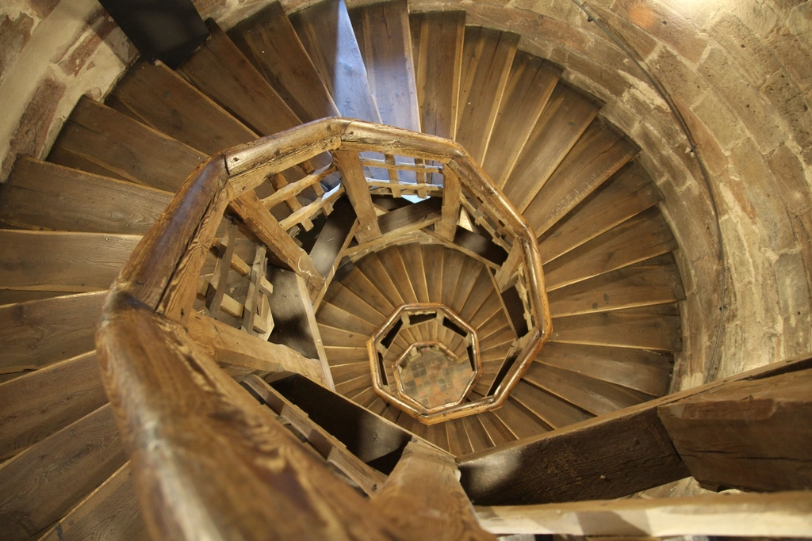
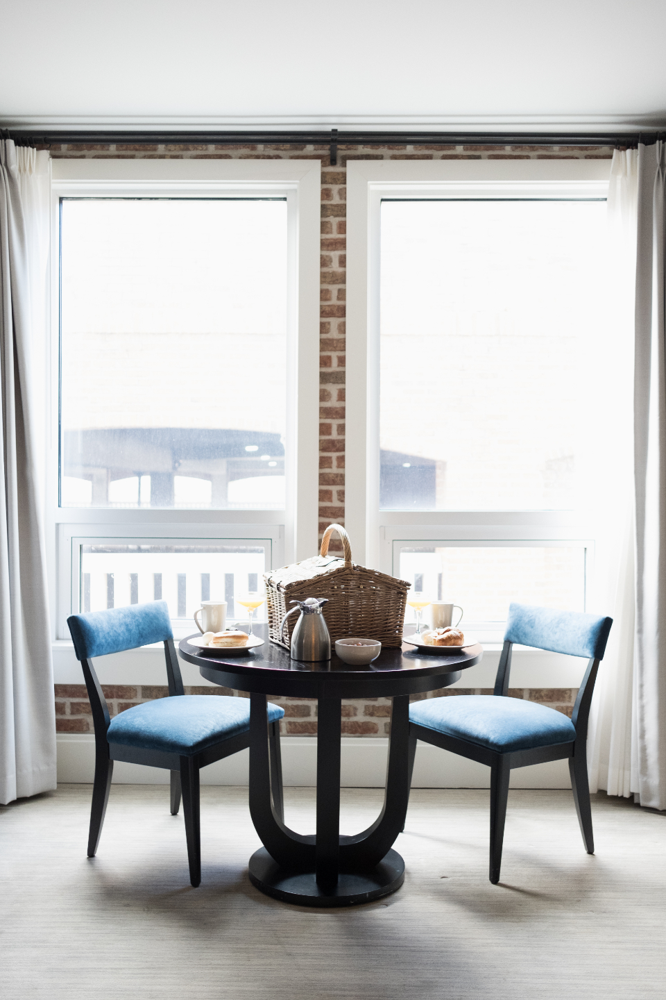
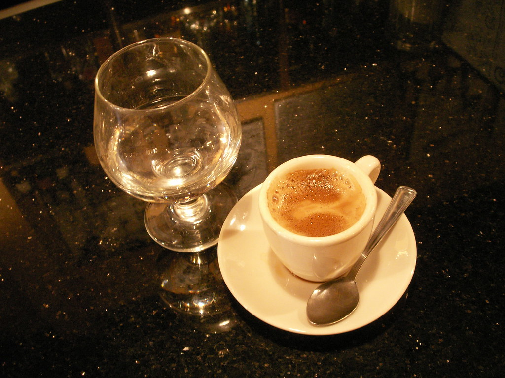

階段を上ると、時間の流れ方が変わる
パステルの時間
新崎の通りに面した、ひとつの階段。そこを上った先に、パステルの店内が広がっています。昼はにぎやかに、夜は静かに。そして待ち時間には、棚いっぱいの本が寄り添う――パステルで過ごす時間を、3つの視点からご紹介します。

01 / HIDEAWAY
階段の先にある、隠れ家のような店
パステルのお店は、階段を上った2階にあります。通りを歩いていても、気づかず通り過ぎてしまいそうな、隠れ家的な入口です。店前には4〜5台分の駐車スペースもあり、車での来店もしやすくなっています。
何気ない階段を上るその数十秒が、日常から少し離れた時間への入り口になっているのかもしれません。
02 / DAY & NIGHT
昼はにぎやかに、夜は静かに

昼
お得なランチセットを求めて、多くの方が集まる時間帯です。店内中央には10人がけの大テーブル、周囲には2人・4人がけのテーブルも用意されており、少人数からグループまで幅広い使い方ができます。

夜
日が暮れると、店内は比較的落ち着いた雰囲気に変わるようです。心地よい音楽が流れる中、一人でもゆったりと食事や時間を楽しめる――そんな「夜がおすすめ」という声もお客様からいただいています。
03 / BOOKSHELF
待ち時間のお供に、棚いっぱいの本
店内の棚には本が並んでいます。料理ができあがるまでの時間、その一冊に手を伸ばして過ごすお客様もいらっしゃるようです。
急かされることのない、ゆったりとした時間の流れも、パステルの居心地の良さのひとつかもしれません。